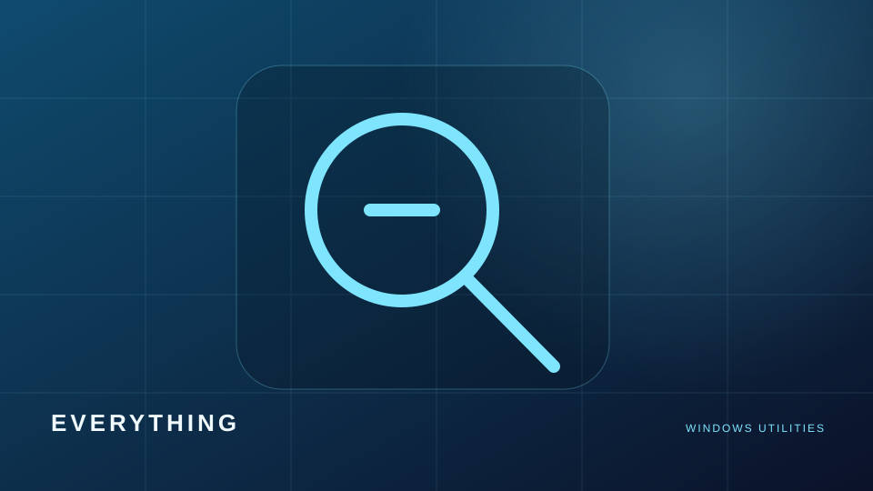
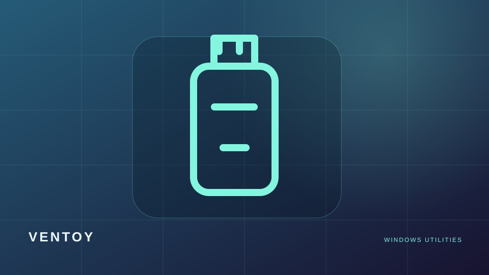
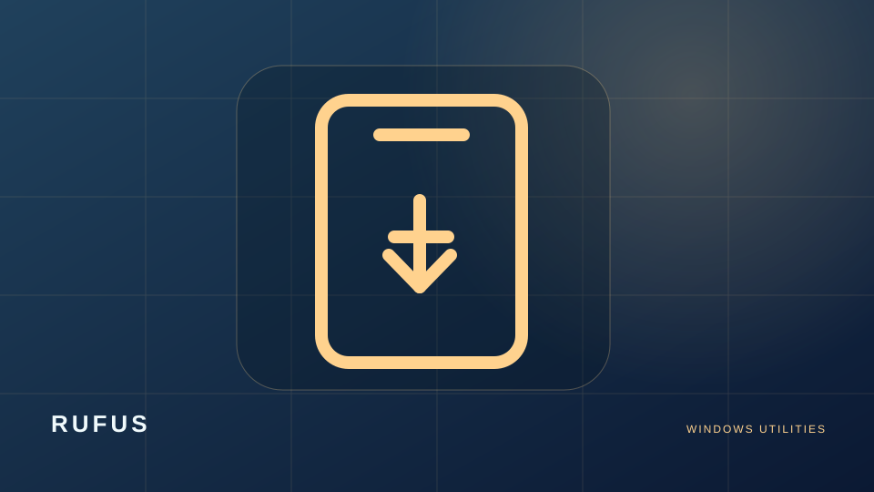
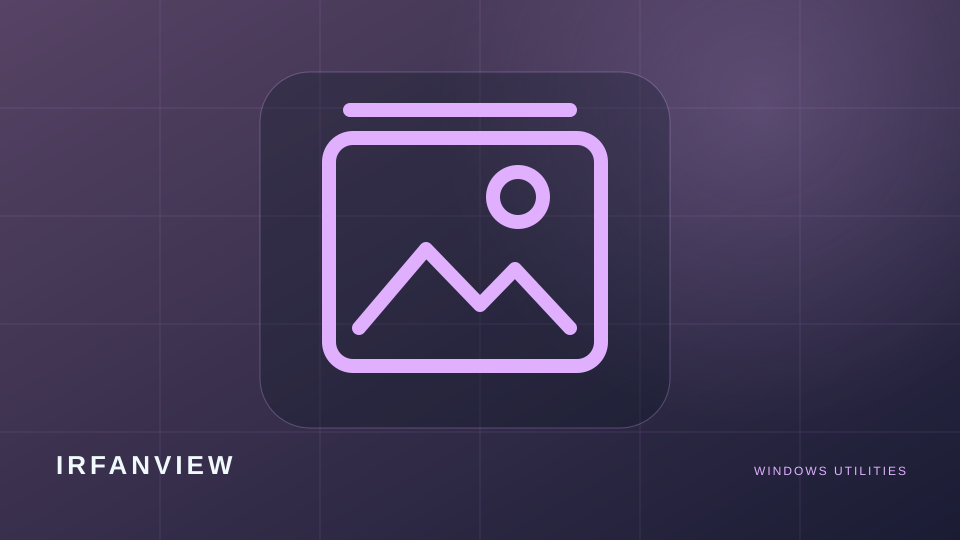
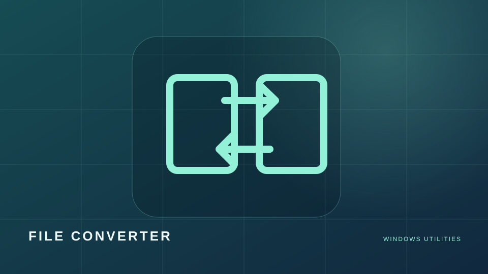
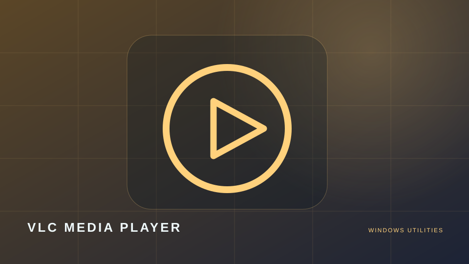
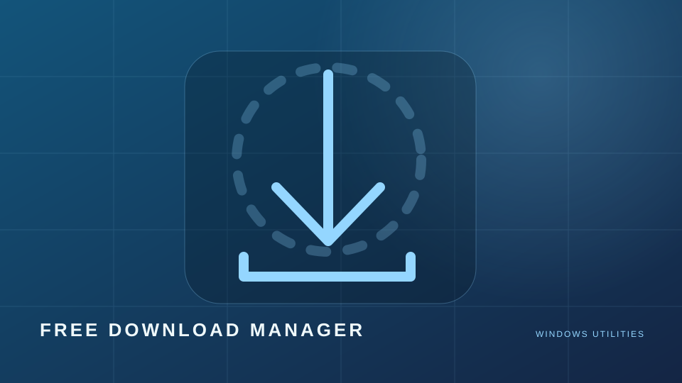
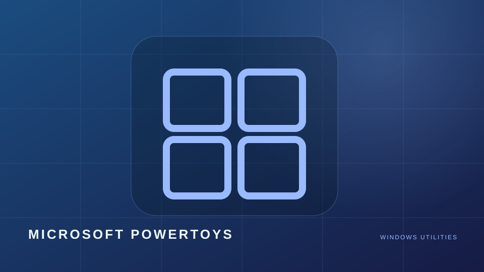

Everything
محرك بحث فوري عن الملفات والمجلدات في Windows، مع تصفية النتائج بسرعة وبواجهة خفيفة.
مجاني · بحث وملفاتأدوات Windows موصى بتجربتها من مواقعها الرسمية، منها Rufus وVentoy وEverything وVLC وMicrosoft PowerToys. تراخيص البرامج تختلف، وبعضها مجاني للاستخدام غير التجاري فقط.

محرك بحث فوري عن الملفات والمجلدات في Windows، مع تصفية النتائج بسرعة وبواجهة خفيفة.
مجاني · بحث وملفات
لإعداد USB متعدد الإقلاع: انسخ ملفات ISO وWIM إلى وحدة واحدة واستخدم قائمة الإقلاع.
مفتوح المصدر · USB وأنظمة
أداة صغيرة لإنشاء وسائط USB قابلة للإقلاع لتثبيت Windows أو Linux من صور ISO.
مفتوح المصدر · USB وأنظمة
عارض صور سريع وخفيف مع تحرير أساسي وتحويل صيغ ومعالجة مجموعات من الصور.
مجاني للاستخدام غير التجاري · صور ووسائط
تحويل وضغط الملفات من قائمة النقر بالزر الأيمن في File Explorer مع دعم عدة تنسيقات.
مفتوح المصدر GPL-3.0 · صور ووسائط
مشغّل وسائط متعدد الصيغ للتسجيلات والصوت والفيديو، دون الحاجة إلى حزم ترميز إضافية غالبًا.
مفتوح المصدر · صور ووسائط
مدير لتنزيل الملفات مع استكمال التحميل وتنظيم التنزيلات وإدارة سرعة الاتصال.
برنامج مجاني · إنترنت وإنتاجية
مجموعة أدوات مجانية من Microsoft لرفع إنتاجية Windows مثل إدارة النوافذ وإعادة تسمية الملفات.
مفتوح المصدر · إنترنت وإنتاجيةأدوات وبرامج ويندوز مع روابط المشاريع الأخرى من ProTech.